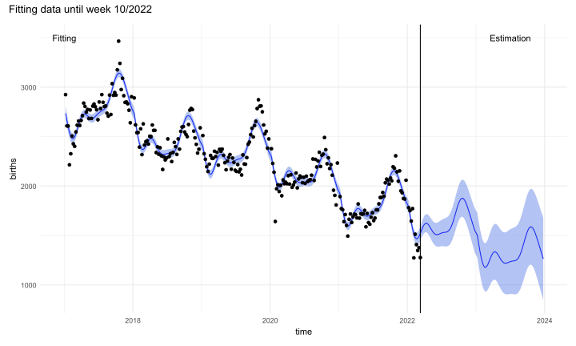
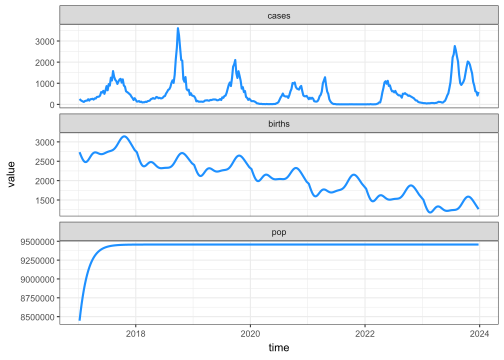

Code
library(readxl)
library(tidyverse)
library(gtsummary)
library(patchwork)
invisible(Sys.setlocale("LC_TIME", "English"))library(readxl)
library(tidyverse)
library(gtsummary)
library(patchwork)
invisible(Sys.setlocale("LC_TIME", "English"))df1 <- read_excel("D:/OUCRU/hfmd/data/TCM_full.xlsx",
col_types = c("date", "numeric", "text",
"text", "text", "date", "date", "date",
"text", "text", "text"))
colnames(df1) <- c("dob", "age", "gender", "commune", "district",
"reported_date", "onset_date","adm_date",
"medi_cen","inout","severity")
df1$dob <- df1$dob %>% as_date()
df1$adm_date <- df1$adm_date %>% as_date()
df1$age1 <- interval(df1$dob, df1$adm_date) / years(1)
df1$adm_week <- as.Date(floor_date(df1$adm_date, "week"))
df1$district <- df1$district %>% str_replace_all(
c( "Quận Gò vấp" = "Quận Gò Vấp"))
df1$district <- df1$district %>%
str_remove("Quận|Huyện|Thành phố") %>%
trimws(which = "both")df1$gender <- df1$gender %>% str_replace_all(
c( "nam|NAM|Nam" = "Male",
"nữ|NỮ|Nữ" = "Female"))
df1$inout <- df1$inout %>% str_replace_all(
c( "Chuyển viện" = "Transfer",
"Điều trị nội trú" = "Inpatient",
"Điều trị ngoại trú" = "Outpatient",
"Ra viện" = "Discharge",
"Tình trạng khác" = "Others",
"Tử vong" = "Death"
))
df1 %>% mutate(year = year(adm_date)) %>%
tbl_summary(by = year,
label = c(age1 ~ "Age",
gender ~ "Gender"),
statistic = list(
age1 ~ "{median} ({p5}, {p95})",
c(gender) ~ c( "{n} ({p}%)")
),
missing = "no",
include = c(age1,gender)) %>%
bold_labels()| Characteristic | 2013 N = 8,0781 |
2014 N = 10,0431 |
2015 N = 8,7291 |
2016 N = 5,7401 |
2017 N = 30,8251 |
2018 N = 39,3521 |
2019 N = 28,4861 |
2020 N = 16,3981 |
2021 N = 9,7721 |
2022 N = 19,1651 |
2023 N = 43,3801 |
2024 N = 7,3971 |
|---|---|---|---|---|---|---|---|---|---|---|---|---|
| Age | NA (NA, NA) | NA (NA, NA) | NA (NA, NA) | NA (NA, NA) | 1.84 (0.69, 5.06) | 1.95 (0.69, 5.68) | 1.85 (0.66, 5.44) | 1.83 (0.71, 5.02) | 2.21 (0.74, 5.45) | 2.25 (0.78, 5.50) | 2.54 (0.79, 6.04) | 2.35 (0.69, 5.95) |
| Gender | ||||||||||||
| Female | 3,159 (39%) | 4,070 (41%) | 3,617 (41%) | 2,391 (42%) | 12,982 (42%) | 16,815 (43%) | 12,196 (43%) | 6,944 (42%) | 4,123 (42%) | 7,950 (41%) | 18,461 (43%) | 3,121 (42%) |
| Male | 4,919 (61%) | 5,973 (59%) | 5,112 (59%) | 3,349 (58%) | 17,843 (58%) | 22,537 (57%) | 16,290 (57%) | 9,454 (58%) | 5,649 (58%) | 11,215 (59%) | 24,919 (57%) | 4,276 (58%) |
| 1 Median (5% Centile, 95% Centile); n (%) | ||||||||||||
spa_df <- df1[,c("district","adm_date","adm_week")] %>% na.omit()
spa_df$day <- day(spa_df$adm_date)
spa_df$month <- month(spa_df$adm_date)
spa_df$year <- year(spa_df$adm_date)
qhage <- spa_df %>%
filter(year == 2023) %>% group_by(year,month,day) %>%
count(district) %>%
mutate(datetime = lubridate::make_datetime(2023, month,day)) %>%
ggplot(aes(x = datetime, y = n)) + geom_line() +
scale_x_datetime(breaks = lubridate::make_datetime(2023,1:12),labels = month.abb)+
facet_wrap(~district,
ncol = 5)+
theme_bw()+
xlab("Addmission date (day)")+
ylab("Cases")+
ylim(0,50)+
theme(axis.text.x = element_text(angle = 90, vjust = 0.5, hjust=1,size = 10),
axis.text.y = element_text(size = 15),
axis.title.x = element_text(size = 15),
axis.title.y = element_text(size = 15),
strip.text.x = element_text(size = 15))qhagedf23 <- df1 %>% filter(year(adm_date) == "2023") %>%
filter(!is.na(adm_date) & !is.na(dob))
# df23 <- df23[,c("adm_date","age1")]
df23 <- df23[,c("adm_week","age1")]
df23$agr <- cut(df23$age1, breaks = c(0, 1, 2, 3, 4,5,6,Inf), right = F)
df23$agr <- factor(df23$agr, labels = c("[0-1)", "[1-2)", "[2-3)",
"[3-4)","[4-5)","[5-6)","6+"))df23 |>
filter(!is.na(adm_week), !is.na(agr)) |>
count(adm_week, agr) |>
group_by(adm_week) |>
mutate(prop = n / sum(n)) |>
data.frame() %>%
ggplot(aes(x = adm_week,y=prop)) +
geom_bar(stat = "identity")+
facet_wrap(vars(agr))+
theme_bw()+
labs(x = "Admission week",y= "Percentage (%)")+
theme(axis.text.x = element_text(size = 6),
axis.text.y = element_text(size = 6),
axis.title.x = element_text(size = 6),
axis.title.y = element_text(size = 6))## sliding window function
slide_age <- function(time1,age1,w1,s1){
df1 <- data.frame(time1,age1) %>% ## line listing data frame
filter(!is.na(time1) & !is.na(age1)) %>%
arrange(time1)
a_df1 <- df1 %>% count(time1) ## aggregate data frame
total1 <- nrow(a_df1)
spots1 <- seq(from = 1, to = (total1 - w1 + 1), by = s1)
out_total <- data.frame()
for (i in 1:length(spots1)){
range1 <- data.frame(a_df1[spots1[i]:(spots1[i] + w1 - 1),1])
result1 <- df1$age1[df1$time1 >= range1[1,] & df1$time1 <= range1[w1,]]
out <- data.frame(date = rep(as.character(range1[ceiling(w1/2),]),length(result1)),
age = result1)
out <- out[order(out$age),]
out_total <- rbind(out_total,out)
}
output <- list()
output$wdat <- out_total
output$adat <- out_total %>% count(date)
output$parms <- data.frame(w = w1,s =s1)
return(output)
}
case_noti <- function(timee, agee,lab = FALSE){
dat <- data.frame(timee,agee) %>%
filter(!is.na(timee) & !is.na(agee)) %>%
count(timee)
ts <- ggplot(dat, aes(x =timee, y = n)) +
geom_bar(stat = "identity") +
labs(y = "Cases") +
theme_minimal()
if(lab == TRUE){
ts
} else {
ts + theme(axis.title.x = element_blank(),
axis.text.x = element_blank(),
axis.ticks.x = element_blank())
}
}
## plot
co <- data.frame()
for (i in 0:6){
gen <- seq(0,1,le=52) + i
co <- rbind(co,gen)
}
df23 <- df1 %>% filter(year(adm_date) == 2023)
wwww <- slide_age(time1 = df23$adm_date,
age1 = df23$age1,
w1 = 7, s1=7)
ch <- data.frame(date = wwww$adat$date,
c0 = as.numeric(co[1,]),
c1 = as.numeric(co[2,]),
c2 = as.numeric(co[3,]),
c3 = as.numeric(co[4,]),
c4 = as.numeric(co[5,]),
c5 = as.numeric(co[6,]))
tshm <- function(model,agelim) {
ts <- case_noti(model$wdat$date,model$wdat$age)
hm <- ggplot(data=model$wdat, aes(x=date, y=age)) +
stat_density(
aes(fill = after_stat(density)),
geom = "raster",
position = "identity"
)+
scale_fill_gradient(low="yellow", high="red")+
theme_minimal()+
scale_y_reverse(lim= rev(agelim),breaks = seq(0,6))+
# scale_x_discrete(guide = guide_axis(n.dodge = 2))+
theme(axis.text.x = element_text(angle = 90, vjust = 0.5, hjust=1,size = 8))+
geom_line(data = ch,aes(x = date,y = c0),col = "white",
group = 1,lwd = 0.25,alpha = 0.5)+
geom_line(data = ch,aes(x = date,y = c1),col = "white",
group = 1,lwd = 0.25,alpha = 0.5)+
geom_line(data = ch,aes(x = date,y = c2),col = "white",
group = 1,lwd = 0.25,alpha = 0.5)+
geom_line(data = ch,aes(x = date,y = c3),col = "white",
group = 1,lwd = 0.25,alpha = 0.5)+
geom_line(data = ch,aes(x = date,y = c4),col = "white",
group = 1,lwd = 0.25,alpha = 0.5)+
geom_line(data = ch,aes(x = date,y = c5),col = "white",
group = 1,lwd = 0.25,alpha = 0.5)
ts/hm
}tshm(wwww,c(0,6))
library(tidyverse)
library(lubridate)
library(readxl)
library(mgcv)
library(patchwork)
library(odin)
library(tsiR)
library(janitor)count_dangky_week <- readRDS("D:/OUCRU/hfmd/data/count_dangky_week.rds")
child <- count_dangky_week %>% filter(birth_year >= 2017) %>% group_by(birth_week, birth_year) %>%
summarise(n=sum(n)) %>% arrange(birth_year)
colnames(child) <- c("week","year","birth")
## combine week 52 and 53
child$week <- ifelse(child$week == 53,52,child$week)
child <- child %>% group_by(year) %>%
mutate(newn = ifelse(week == 52, sum(birth[week==52]), birth)) %>%
{data.frame(.$week, .$year, .$newn )} %>% unique() %>%
magrittr::set_colnames(c("week","year","birth"))
child$week2 <- seq(1:length(child$week))
time <- data.frame()
for (i in 2017:2022){
range <- child$week[child$year == i]
if (length(range) == 52){
time_add <- seq.int(i + 7/365 ,(i+1) - 7/365,
length.out = length(range)) %>% data.frame()
} else {
time_add <- seq.int(i + 7/365 ,(i+1) - 7/365,
length.out = 52)[1:length(range)] %>% data.frame()
}
time <- rbind(time,time_add)
}
child[,5] <- time %>%
magrittr::set_colnames(c("time"))
## model fitting
fit <- mgcv::gam(birth ~ s(week) + s(week2),method = "REML",data = child)cutpoint <- function(point){
fitt <- mgcv::gam(birth ~ s(week) + s(week2),
method = "REML",data = child[-c(point:nrow(child)),])
new_data2 <- data.frame(week = rep(1:52,7))
new_data2$week2 <- seq(1,nrow(new_data2))
new_data2$year <- rep(2017:2023,each = 52)
time <- data.frame()
for (i in 2017:2023){
range <- new_data2$week[new_data2$year == i]
time_add <- data.frame(seq.int(i + 7/365 ,(i+1) - 7/365,
length.out = length(range)))
time <- rbind(time,time_add)
}
new_data2[4] <- time %>%
magrittr::set_colnames(c("time"))
est2 <- predict.gam(fitt,newdata = new_data2,
type="response",se.fit = TRUE)
new_data2 <- new_data2 %>% mutate(
fit = est2$fit,
lwr = est2$fit - qt(0.95,nrow(new_data2))*est2$se.fit,
upr = est2$fit + qt(0.95,nrow(new_data2))*est2$se.fit,
)
out <- list()
out$point <- point
out$df <- new_data2
return(out)
}
plot_cp <- function(model){
dta <- model$df
ggplot(data = dta) +
geom_line(aes(x = time,y = fit),col = "blue")+
geom_ribbon(aes(x = time,ymin = lwr, ymax = upr), fill = "royalblue",alpha = 0.4)+
geom_vline(xintercept = dta$time[dta$week2 == model$point])+
ylab("births")+
theme_minimal()
}model <- cutpoint(270)
plot_cp(model)+
geom_point(data = child[1:270,], aes(x = time, y = birth))+
annotate("text", x= 2017, y=3500, label= "Fitting") +
annotate("text", x = 2023.5, y=3500, label = "Estimation")+
plot_annotation(
title = "Fitting data until week 10/2022"
)
hfmd1723 <- df1 %>% filter(year(adm_week) >= "2017" & year(adm_week) <= "2023") %>%
filter(!is.na(adm_week) ) %>%
count(adm_week)
agr17 <- hfmd1723 %>% filter(year(adm_week) == "2017") %>%
filter(!is.na(adm_week) ) %>% mutate(week = 1:length(adm_week)) %>% as.data.frame()
agr17$week <- ifelse(agr17$week == 53,52,agr17$week)
d17 <- agr17 %>% mutate(newn = ifelse(week == 52, sum(n[week==52]), n),
year = year(adm_week)) %>%
{data.frame(.$week, .$year, .$newn )} %>% unique() %>%
magrittr::set_colnames(c("week","year","cases"))
## 18
d18 <- hfmd1723 %>% filter(year(adm_week) == "2018") %>%
filter(!is.na(adm_week) ) %>% mutate(week = 1:length(adm_week),
year = year(adm_week)) %>%
as.data.frame() %>% select(week,year,n) %>%
magrittr::set_colnames(c("week","year","cases"))
## 19
d19 <- hfmd1723 %>% filter(year(adm_week) == "2019") %>%
filter(!is.na(adm_week) ) %>% mutate(week = 1:length(adm_week),
year = year(adm_week)) %>%
as.data.frame() %>% select(week,year,n) %>%
magrittr::set_colnames(c("week","year","cases"))
## 20
d20 <- hfmd1723 %>% filter(year(adm_week) == "2020") %>%
filter(!is.na(adm_week) ) %>% mutate(week = 1:length(adm_week),
year = year(adm_week)) %>%
as.data.frame() %>% select(week,year,n) %>%
magrittr::set_colnames(c("week","year","cases"))
## 21
d21 <- hfmd1723 %>% filter(year(adm_week) == "2021") %>%
filter(!is.na(adm_week) ) %>% mutate(week = 1:length(adm_week),
year = year(adm_week)) %>%
as.data.frame() %>% select(week,year,n) %>%
magrittr::set_colnames(c("week","year","cases"))
## 22
d22 <- hfmd1723 %>% filter(year(adm_week) == "2022") %>%
filter(!is.na(adm_week) ) %>% mutate(week = 1:length(adm_week),
year = year(adm_week)) %>%
as.data.frame() %>% select(week,year,n) %>%
magrittr::set_colnames(c("week","year","cases"))
## 23
agr23 <- hfmd1723 %>% filter(year(adm_week) == "2023") %>%
filter(!is.na(adm_week) ) %>% mutate(week = 1:length(adm_week)) %>% as.data.frame()
agr23$week <- ifelse(agr23$week == 53,52,agr23$week)
d23 <- agr23 %>% mutate(newn = ifelse(week == 52, sum(n[week==52]), n),
year = year(adm_week)) %>%
{data.frame(.$week, .$year, .$newn )} %>% unique() %>%
magrittr::set_colnames(c("week","year","cases"))
cases1723 <- rbind(d17,d18,d19,d20,d21,d22,d23)birth1723 <- model$df %>%
select(week,year,fit)
hcm1723 <- left_join(cases1723,birth1723, by = c("week" = "week","year" = "year"))
time <- data.frame()
for (i in 2017:2023){
range <- hcm1723$week[hcm1723$year == i]
if (length(range) == 52){
time_add <- seq.int(i + 7/365 ,(i+1) - 7/365,
length.out = length(range)) %>% data.frame()
} else {
time_add <- seq.int(i + 7/365 ,(i+1) - 7/365,
length.out = 52)[1:length(range)] %>% data.frame()
}
time <- rbind(time,time_add)
}
hcm1723[,5] <- time %>%
magrittr::set_colnames(c("time"))
hcm1723 <- hcm1723 %>% select(time,cases,fit) %>%
magrittr::set_colnames(c("time","cases","births"))generator <- odin::odin({
deriv(N) <- r * N * (1 - N / K)
initial(N) <- N0
N0 <- user(1)
K <- user(100)
r <- user()
})mod2 <- generator$new(N0 = 8446000,r = 7.4/52,K= 9456700)
y1723 <- mod2$run(1:360)hcm1723 <- cbind(hcm1723,y1723)
colnames(hcm1723) <- c("time","cases","births","t","pop")
hcm_hfmd1723 <- runtsir(data = hcm1723[,-4], IP = 1, xreg = "cumcases",
regtype = "gaussian",alpha = NULL, sbar = NULL,
method = "deterministic", nsim = 1000,
family = "gaussian", link = "identity")plotdata(hcm1723[,-4])
tSIR model fitting for the whole period
hcm1723 %>%
ggplot() +
geom_line(aes(x = time ,group = 1, y = hcm_hfmd1723$res$mean,
linetype = "model fitted"))+
geom_line(aes(x= time, group = 1, y = cases,
linetype = "cases reported"))+
# geom_bar(aes(x= as.character(date), y = cases),stat = "identity")+
theme_minimal()+
labs(y = "Cases",x="Time")+
scale_linetype_manual(values = c("cases reported" = "dashed",
"model fitted" = "solid"),
name="Analysis Type")+
geom_vline(xintercept = 2021.491,
alpha = 0.25,col = "blue",lwd = 0.5)+
geom_vline(xintercept = 2021.491+(7/365*4)*4,
alpha = 0.25,col = "blue",lwd = 0.5)May be the covid quarantine effect the performance of model. Tried to fit before and after covid quanrantine
Before quarantine
before <- hcm1723[,-4] %>% filter(time <= 2021.491)
hcmbefore <- runtsir(data = before, IP = 1, xreg = "cumcases",
regtype = "gaussian",alpha = NULL, sbar = NULL,
method = "deterministic", nsim = 1000,
family = "gaussian", link = "identity")before %>%
ggplot() +
geom_line(aes(x = time ,group = 1, y = hcmbefore$res$mean,
linetype = "model fitted"))+
geom_line(aes(x= time, group = 1, y = cases,
linetype = "cases reported"))+
# geom_bar(aes(x= as.character(date), y = cases),stat = "identity")+
theme_minimal()+
labs(y = "Cases",x="Time")+
scale_linetype_manual(values = c("cases reported" = "dashed",
"model fitted" = "solid"),
name="Analysis Type")After quarantine
after <- hcm1723[,-4] %>% filter(time >= 2022.189)
hcmafter <- runtsir(data = after, IP = 1, xreg = "cumcases",
regtype = "gaussian",alpha = NULL, sbar = NULL,
method = "deterministic", nsim = 1000,
family = "gaussian", link = "identity")after %>%
ggplot() +
geom_line(aes(x = time ,group = 1, y = hcmafter$res$mean,
linetype = "model fitted"))+
geom_line(aes(x= time, group = 1, y = cases,
linetype = "cases reported"))+
# geom_bar(aes(x= as.character(date), y = cases),stat = "identity")+
theme_minimal()+
labs(y = "Cases",x="Time")+
scale_linetype_manual(values = c("cases reported" = "dashed",
"model fitted" = "solid"),
name="Analysis Type")w23 <- slide_age(time1 = df23$adm_date,
age1 = df23$age1,
w1 = 7, s1=7)pop <- readRDS("D:/OUCRU/hfmd/data/count_dangky.rds")
pop_a <- pop %>% group_by(birth_month, birth_year) %>%
summarise(n=sum(n)) %>% arrange(birth_year)
colnames(pop_a) <- c("m","y","n")
pop_a$dob <- str_c(pop_a$y,pop_a$m,sep = "-") %>% ym()
##
hfmd23 <- df1 %>% filter(year(adm_week) == "2023") %>%
filter(!is.na(adm_week) ) %>%
count(adm_week)
hfmd23$week <- 1:length(hfmd23$adm_week)
hfmd23$week <- ifelse(hfmd23$week == 53,52,hfmd23$week)
hfmd23$n2 <- ifelse(hfmd23$week == 52, sum(hfmd23$n[hfmd23$week==52]), hfmd23$n)
hfmd23 <- hfmd23[-53,]
##
generator <- odin::odin({
deriv(N) <- r * N * (1 - N / K)
initial(N) <- N0
N0 <- user(1)
K <- user(100)
r <- user()
})
mod <- generator$new(N0 = 9381717,r = 7.4/52,K= 9456700)
y3 <- mod$run(1:52)
##
dta23 <- model$df %>% filter(year == 2023)
hcm23 <- data.frame(time = dta23$time,
cases = hfmd23$n,
births = dta23$fit,
pop = y3[,2])
hcm_hfmd23 <- runtsir(data = hcm23, IP = 1, xreg = "cumcases", regtype = "gaussian",
alpha = NULL, sbar = NULL, method = "negbin", nsim = 100,
family = "gaussian", link = "identity")[1] "gaussian regressian failed -- switching to loess regression" alpha mean beta mean rho mean sus
6.90e-01 7.62e-05 1.03e+00 9.46e+04
prop. init. sus. prop. init. inf.
7.54e-03 6.05e-06 ## recaculate attack rate
time1 = df1$adm_date
age1 = df1$age1
dob = pop_a$dob
n = pop_a$n
dft <- data.frame(time1,age1) %>%
filter(!is.na(time1) & !is.na(age1)) %>%
arrange(time1)
dft$agr=as.factor(cut(dft$age1, c(0,0.5,
1,1.5,
2,2.5,
3,3.5,
4,4.5,5,100), right=TRUE ))
levels (dft$agr) = c("0-0.5", "0.5-1", "1.0-1.5",
"1.5-2","2-2.5","2.5-3",
"3-3.5","3.5-4","4-4.5",
"4.5-5","5+")
sus_pop <- data.frame(dob = dob, n = n)
out_total <- data.frame()
dateaa <- hfmd23$adm_week+3
sus_pop <- data.frame(dob = dob, n = n)
for (i in 1:52){
sus_pop$age <- interval(sus_pop$dob, dateaa[i]) / years(1)
sus_pop$agr=as.factor(cut(sus_pop$age, c(0,0.5,
1,1.5,
2,2.5,
3,3.5,
4,4.5,5,100), right=TRUE ))
levels (sus_pop$agr) = c("0-0.5", "0.5-1", "1.0-1.5",
"1.5-2","2-2.5","2.5-3",
"3-3.5","3.5-4","4-4.5",
"4.5-5","5+")
outcum <- sus_pop %>% group_by(agr) %>%
summarise(n = sum(n)) %>%
as.data.frame()
outcum$date <- rep(dateaa[i],nrow(outcum))
out_total <- rbind(out_total,outcum)
}
deno <- out_total %>%
pivot_wider(names_from = agr, values_from = n) %>% as.data.frame()
casss <- wwww$wdat
casss$agr=as.factor(cut(casss$age, c(0,0.5,1,1.5,2,2.5,
3,3.5,4,4.5,5,100), right=TRUE ))
levels (casss$agr) = c("0-0.5", "0.5-1", "1.0-1.5",
"1.5-2","2-2.5","2.5-3",
"3-3.5","3.5-4","4-4.5",
"4.5-5","5+")
casss <- casss %>% group_by(date,agr) %>%
count() %>% pivot_wider(names_from = agr, values_from = n) %>% as.data.frame()
casss <- casss[,-13]
casss <- replace(casss,is.na(casss), 0)
casss <- casss[,c(1:10,12,11)]
atkr <- data.frame()
atkr <- rbind(atkr,as.numeric(casss[1,-1])/as.numeric(deno[1,-1]))
for (i in 1:51){
new <- as.numeric(casss[i+1,-1])/(as.numeric(deno[i+1,-1]) - as.numeric(casss[i,-1]))
atkr <- rbind(atkr,new)
}
atkr <- cbind(deno$date,atkr)
colnames(atkr) <- colnames(deno)
atkr <- replace(atkr,is.na(atkr), 0)
atk_plot <- atkr %>% pivot_longer(cols=c("0-0.5", "0.5-1", "1.0-1.5",
"1.5-2","2-2.5","2.5-3",
"3-3.5","3.5-4","4-4.5",
"4.5-5","5+"),
names_to= 'agr',
values_to='atk') %>% as.data.frame()beta <- hcm_hfmd23$contact
beta[52,] <- beta[51,]
atk <- ggplot(atk_plot, aes(x=as.character(date), y=agr, fill = atk)) +
geom_raster()+
scale_fill_gradient(low="yellow", high="red",
name = "Attack rate")+
scale_y_discrete(limits=rev)+
theme_minimal()+
labs(y = "Age group")+
theme(axis.title.x = element_blank(),
axis.text.x = element_blank(),
axis.ticks.x = element_blank(),
axis.text.y = element_text(size = 8),
legend.text = element_text(size=4),
legend.title = element_text(size=7))
c <- ggplot(data = hcm23 %>%
select(time,cases) %>% mutate(date = hfmd23$adm_week + 3)) +
geom_line(aes(x= as.character(date), group = 1, y = cases,
linetype = "cases reported"))+
# geom_bar(aes(x= as.character(date), y = cases),stat = "identity")+
geom_line(aes(x = as.character(date) ,group = 1, y = hcm_hfmd23$res$mean,
linetype = "model fitted"))+
geom_line(aes(x = as.character(date),
y= beta$beta*15000000,
group =1,col = "contact rate"),alpha = 0.3,inherit.aes = FALSE) +
scale_color_manual(values = c("contact rate" = "blue"),
name="Analysis Type")+
scale_linetype_manual(values = c("cases reported" = "dashed","model fitted" = "solid"),
name="Analysis Type")+
scale_y_continuous(
name = "Cases",
# Add a second axis and specify its features
sec.axis = sec_axis(~./15000000, name="Contact rate")
)+
theme_minimal()+
theme(axis.title.x = element_blank(),
axis.text.x = element_blank(),
axis.ticks.x = element_blank(),
legend.title= element_blank(),
legend.position = "inside",
legend.position.inside = c(.15, .60))+
geom_vline(xintercept = as.character("2023-05-24"))+
geom_vline(xintercept = as.character("2023-09-06"))+
annotate(
geom = "text", x = as.character("2023-05-31"), y = 3500,
label = "Summer break", hjust = 0, vjust = 1, size = 3
)
hmc <- ggplot(data=w23$wdat, aes(x=date, y=age)) +
stat_density(
aes(fill = after_stat(density)),
geom = "raster",
position = "identity"
)+
scale_fill_gradient(low="yellow", high="red")+
geom_line(data = ch,aes(x = date,y = c0),col = "white",
group = 1,lwd = 0.5,alpha = 0.5)+
geom_line(data = ch,aes(x = date,y = c1),col = "white",
group = 1,lwd = 0.5,alpha = 0.5)+
geom_line(data = ch,aes(x = date,y = c2),col = "white",
group = 1,lwd = 0.5,alpha = 0.5)+
geom_line(data = ch,aes(x = date,y = c3),col = "white",
group = 1,lwd = 0.5,alpha = 0.5)+
geom_line(data = ch,aes(x = date,y = c4),col = "white",
group = 1,lwd = 0.5,alpha = 0.5)+
scale_y_reverse(lim= rev(c(0,5)))+
theme_minimal()+
theme(axis.text.x = element_text(angle = 90, vjust = 0.5, hjust=1,size = 8),
legend.text = element_text(size=4),
legend.title = element_text(size=7))c/
atk/
hmc